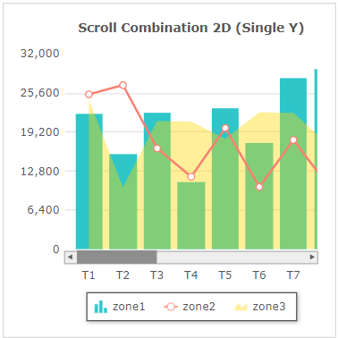
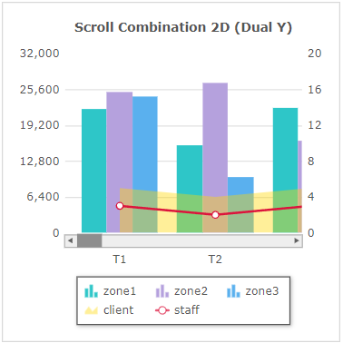

Fusionchart의 'Scroll Combination' 타입을 확인할 수 있는 예제입니다. 화면에 구성된 항목를 선택하여 차트의 타입을 변경할 수 있습니다.차트의 타입은 함수 'changeType'를 사용하여 스크립트로 변경할 수 있습니다.
FusionChart 가이드 : https://www.fusioncharts.com/dev/fusioncharts
FusionChart의 타입 목록 : https://www.fusioncharts.com/dev/chart-guide/list-of-charts/
스크립트로 'Scroll Combination Single Y Axis Charts' 타입의 차트 변경하기
스크립트로 'Scroll Combination Dual Y Axis Charts' 타입의 차트 변경하기
'Scroll Combination Single Y Axis Charts' 영역의 Radio에 변경할 수 있는 차트 타입이 구성되어 있습니다. 항목을 선택(클릭)하면 차트 타입이 변경됩니다.
CASE 1. 'Scroll Combination 2D (Dual Y)' 타입
그림 1.브라우저(Chrome) 실행 예시 - 'Scroll Combination 2D (Single Y)' 타입

'Scroll Combination Dual Y Axis Charts' 영역의 Radio에 변경할 수 있는 차트 타입이 구성되어 있습니다. 항목을 선택(클릭)하면 차트 타입이 변경됩니다.
CASE 1. 'Scroll Combination 2D (Dual Y)' 타입
그림 2.브라우저(Chrome) 실행 예시 - 'Scroll Combination 2D (Dual Y)' 타입

FusionChart의 함수 'changeType'를 사용하여 구현합니다.
스크립트
// 'Scroll Combination Single Y Axis Charts' 타입 변경 예시)
// Fucionchart의 속성 'seriesColumns' 예시) [['zone1',{'id':'zone2','renderas':'Line', 'color' : '#FA8072'},{'id':'zone3','renderas':'area', 'color' : '#FFD700', 'alpha' : '40'}]]
// Fusionchart 'cht_exam1'의 차트 타입을 'Scroll Combination 2D (Single Y)'로 변경합니다.
cht_exam1.changeType('scrollcombi2d');소스 코드 본문
<w2:fusionchart chartType="ScrollCombi2D" id="cht_exam1" labelNode="type" seriesColumns="[['zone1',{'id':'zone2','renderas':'Line', 'color' : '#FA8072'},{'id':'zone3','renderas':'area', 'color' : '#FFD700', 'alpha' : '40'}]]" drawType="javascript" ref="data:dlt_chartData_1"> </w2:fusionchart>
DataList 'dlt_chartData_1'의 JSON 유형의 데이터
[
{
"type": "T1",
"zone1": "22350",
"zone2": "25420",
"zone3": "24560"
},
{
"type": "T2",
"zone1": "15740",
"zone2": "26950",
"zone3": "10140"
},
{
"type": "T3",
"zone1": "22580",
"zone2": "16550",
"zone3": "21070"
}
]FusionChart의 함수 'changeType'를 사용하여 구현합니다.
스크립트
// 'Scroll Combination Dual Y Axis Charts' 타입 변경 예시) // Fucionchart의 속성 'seriesColumns' 예시) [['zone1', 'zone2', 'zone3', {'id':'client','renderas':'area', 'color' : '#FFD700', 'alpha' : '40', 'parentYAxis': 'S'}, {'id':'staff','renderas':'line', 'color' : '#DC143C', 'parentYAxis': 'S'}]] // Fusionchart 'cht_exam2'의 차트 타입을 'Scroll Combination 2D (Dual Y)'로 변경합니다. cht_exam2.changeType('scrollcombidy2d');
소스 코드 본문
<w2:fusionchart chartType="ScrollCombiDY2D" id="cht_exam1" labelNode="type" seriesColumns="[['zone1', 'zone2', 'zone3', {'id':'client','renderas':'area', 'color' : '#FFD700', 'alpha' : '40', 'parentYAxis': 'S'}, {'id':'staff','renderas':'line', 'color' : '#DC143C', 'parentYAxis': 'S'}]]" drawType="javascript" ref="data:dlt_chartData_1"> </w2:fusionchart>
DataList 'dlt_chartData_1'의 JSON 유형의 데이터
[
{
"type": "T1",
"zone1": "22350",
"zone2": "25420",
"zone3": "24560",
"client": "5",
"staff": "3"
},
{
"type": "T2",
"zone1": "15740",
"zone2": "26950",
"zone3": "10140",
"client": "4",
"staff": "2"
},
{
"type": "T3",
"zone1": "22580",
"zone2": "16550",
"zone3": "21070",
"client": "5",
"staff": "3"
}
]chartType ( chartType )
setChartAttribute( options )
draw( )
[웹스퀘어5 SP5 개발 가이드] FusionChart
링크 : https://docs1.inswave.com/sp5_user_guide/fd3575622d85d6f9#44b0ca13f66930d7
[웹스퀘어5 SP5 개발 가이드] FusionChart 차트 Customizing
링크 : https://docs1.inswave.com/sp5_user_guide/fd3575622d85d6f9#7d50580dd69b26a9
[FusionChart 개발 가이드] 차트 타입
링크 : https://www.fusioncharts.com/dev/chart-guide/list-of-charts